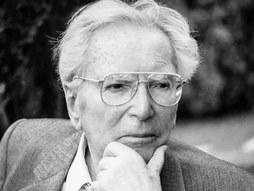

MAN'S SEARCH FOR MEANING
REVIEW
Man´s search for meaning is one of those unforgettable books that can provoke a change in your way of looking at life and the people around you. The book has two clearly differentiated parts. On the one hand, the first half of Man’s Search for Meaning describes life in Nazi concentration camp in light of the author’s discovery of meaning as a key survival factor. On the other hand, in the second part of the book, Frankl explains Logotherapy, his method of “curing the soul by leading it to find meaning in life.”
In another words, Frankl argues that we cannot avoid suffering, but we can choose how to cope with it, find meaning in it, and move forward with renewed purpose. By choosing to exercise his ability to control his reactions and the way he treated others, Frankl discovered the ultimate meaning of freedom. This kind of freedom enabled him to defy his oppressors because no matter what they said or did they could not make him believe that any human life—including his own—was worthless. Along the book, he exposes how the pursuit of this resistance gave him meaning and allowed him and so many others to endure one of the most difficult burdens in human history: a Nazi concentration camp. As Gordon Allport notes in his Preface to the third edition, this is what the ancient Stoics called the ‘last freedom’. This ultimate human freedom is the freedom to control our attitude toward the situations we inherit.
QUOTES
““Don't aim at success. The more you aim at it and make it a target, the more you are going to miss it. For success, like happiness, cannot be pursued; it must ensue, and it only does so as the unintended side effect of one's personal dedication to a cause greater than oneself or as the by-product of one's surrender to a person other than oneself. Happiness must happen, and the same holds for success: you have to let it happen by not caring about it. I want you to listen to what your conscience commands you to do and go on to carry it out to the best of your knowledge. Then you will live to see that in the long-run—in the long-run, I say!—success will follow you precisely because you had forgotten to think about it”
- Victore E. Frankl
Author
Frankl was born the middle of three children to Gabriel Frankl, a civil servant in the Ministry of Social Service, and Elsa (née Lion).[1] His interest in psychology and the role of meaning developed when he began taking night classes on applied psychology while in junior high school.[1] As a teenager, he began corresponding with Sigmund Freud, when he asked for permission to publish one of his papers.he began corresponding with Sigmund Freud, when he asked for permission to publish one of his papers.